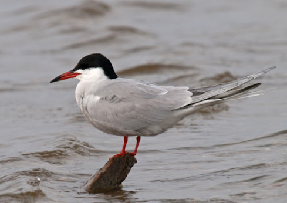

Mazo zīriņu ligzdošanas laikā atpūtniekiem slēdz četru upju grīvas
Lai atjaunotu kādreizējo mazo zīriņu (sternula albifrons) populāciju, līdz 31. jūlijam apmeklētājiem slēgs četras grīvas - Gaujas, Ķikana, Irbes un Lūžņas grīvu.
Lasīt rakstu
Lai atjaunotu kādreizējo mazo zīriņu (sternula albifrons) populāciju, līdz 31. jūlijam apmeklētājiem slēgs četras grīvas - Gaujas, Ķikana, Irbes un Lūžņas grīvu.
Lasīt rakstu
Zvirbuļi ir nelieli, drukni putniņi, kuri jau tūkstošiem gadus mājo cieši kaimiņos cilvēkam visās pasaules malās.
Lasīt rakstu
Latvijas Dabas fonds (LDF) beidzis ikpavasara darbus, lai pēc ziemas atjaunotu un izvietotu tiešraides iekārtas pie putnu ligzdām, kam seko miljoniem skatītāju daudzviet pasaulē.
Lasīt rakstu>
Latvijas Ornitoloģijas biedrība (LOB) aicina ikvienu līdz jūlijam veikt putnu balsu audioierakstus piecu minūšu garumā, īpaši attālākās vietās Latvij
Lasīt rakstu>
Putnu aizsardzība pret dabas biotopiem - šāds duelis izvērsies Baltezera salās, kur tur mītošā jūras kraukļu kolonija ilgstoši nodara lielu kaitējumu aizsargājamiem un veciem kokiem, daļu no tiem faktiski iznīcinot.
Lasīt rakstu
Lielajā Baltezerā iecerēts traucēt kormorānu ligzdošanai uz salām, tuvējās pašvaldības informējusi Dabas aizsardzības pārvalde (DAP).
Lasīt rakstu